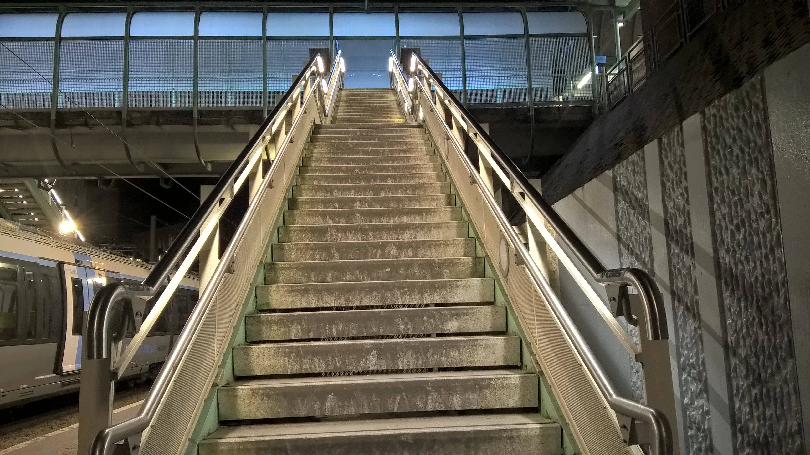
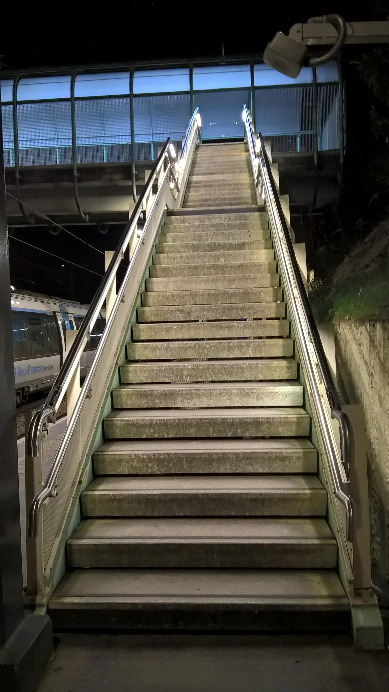

Étude et adaptation
Relevés, interfaces avec l'existant, choix des supports, intégration des rubans ou modules LED.
Fabrication et pose sur mesure
Une solution de guidage lumineux intégrée aux garde-corps et rampes d'escalier, pensée pour les escaliers, passerelles, ERP, sites industriels et cheminements nocturnes.
Prestation dédiée
La main courante lumineuse combine métallerie, serrurerie et intégration électrique. ERRM prend en charge l'étude, la fabrication sur mesure et la pose sur site, avec une attention particulière aux contraintes d'accès, de sécurité et de continuité de service.
Relevés, interfaces avec l'existant, choix des supports, intégration des rubans ou modules LED.
Débits, cintrage, soudure, polissage et préparation en atelier à Villers-Cotterêts.
Intervention organisée pour les accès publics, sites occupés et ouvrages soumis à de fortes contraintes d'usage.

Applications
Dans les lieux de passage, l'éclairage doit rester lisible, robuste et discret. La main courante lumineuse améliore le repérage des marches, renforce la perception des limites et accompagne les flux sans multiplier les équipements visibles.
Référence visuelle


Méthode ERRM
Analyse de l'existant, des fixations, des longueurs et des contraintes de circulation.
Validation des principes de rampe, d'éclairage, de raccordement et de maintenance.
Production en atelier, assemblages maîtrisés et préparation des éléments pour chantier.
Pose sur site avec coordination des accès et des zones d'intervention.
Projet sur mesure
Transmettez vos plans, photos ou contraintes de site. ERRM revient vers vous pour cadrer la faisabilité et le chiffrage.